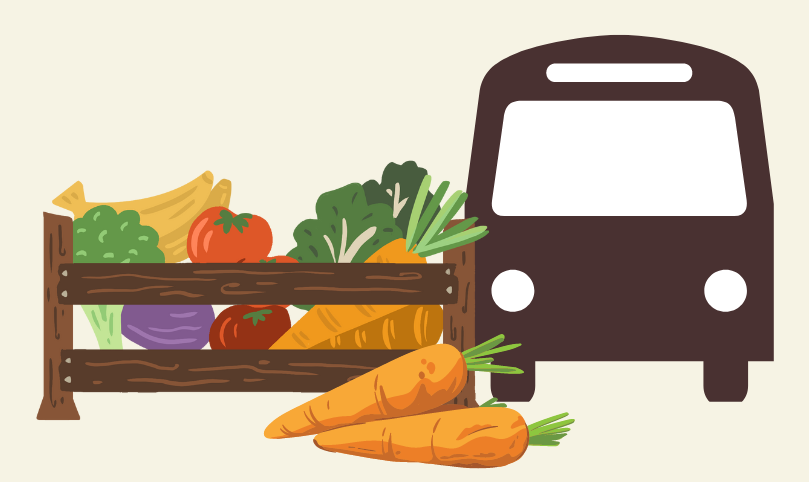

Identified Problem/Background of the Project
When it comes to the shackles that hinder Talikala Inc. from carrying out their purpose for the women in our community, one that is particularly challenging for them to overcome is the lack of resources to provide for the institution’s food and transportation. This seems to have been caused by the dawn of COVID-19, in which most businesses and organizations have struggled with their maintenance due to the limitations brought about by the pandemic. This, then, drives our group to help alleviate this problem through our planned project, although our capabilities only allow us to focus on one aspect of the issue—resources to provide the institution with a source of food.
Proposed Project
“Taniman saBAYAN” is what we call this project, which involves planting and donations. Our group plans to grow tomatoes (and other possible vegetables) in our own homes and donate the harvested crops to the institution to act as their food source. Teaching them how to plant and take care of the seeds that can be extracted from these vegetables is also part of our project’s agenda. With this project, we can be cost-effective when it comes to providing a good food source for the institution, as well as educating them about sustainable, environmental alternatives.
Significance of the Project
Looking at this from the perspectives of the students and the public as a whole, we think that this project would also encourage these people to make use of Urban Container Gardening within their own homes, again promoting sustainability and healthy living. Growing crops on your own poses a number of benefits, from saving money to ensuring a healthy food source, as well as helping the environment and embodying the values of Ecoteneo. All in all, with the help of this healthy and cost-effective alternative, we could continue to develop sustainability not only within our households but also in our entire community as a whole.
Rationale
This project is important as it aids in the resource instability the community is facing. Through the Taniman SaBAYAN project, the community is able to grow and harvest their own crops, allowing them to save money. Furthermore, using the crops they grow, they can make their own food and sell them to earn money for their transportation. This project can ensure that there will be a continuous flow of activities that the institution will conduct for the girls, who are their clients, and their parents whom they work with in different barangays. With the implementation of the project, the institution members can start practicing the importance of container gardening, allowing them to save money and grow resources, thus strengthening the community.
Objectives of The Project